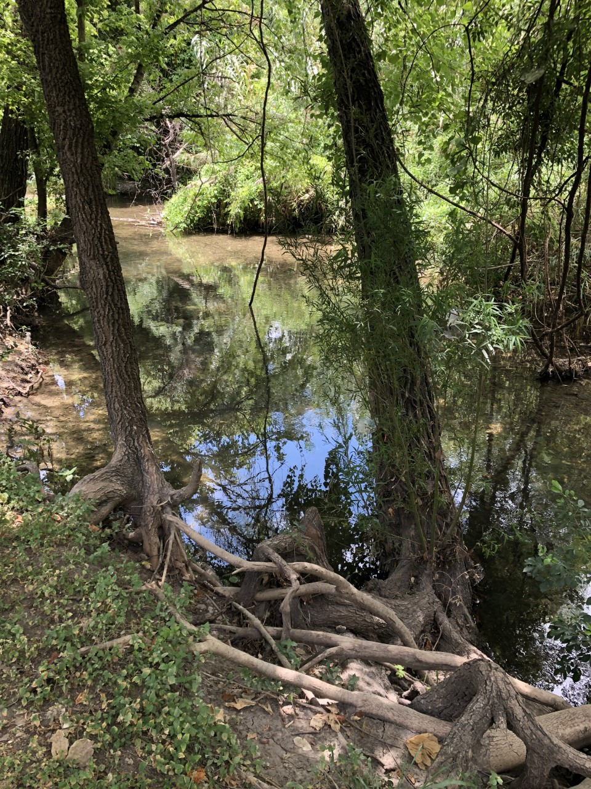
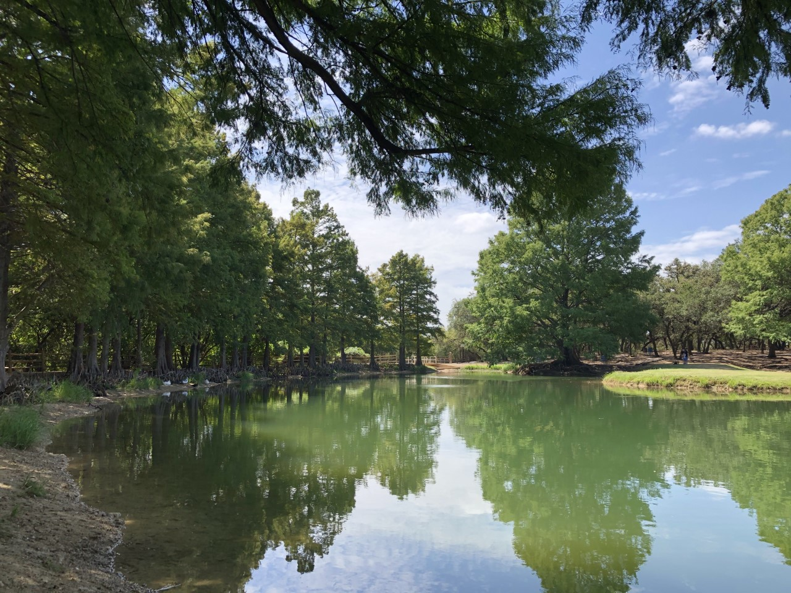
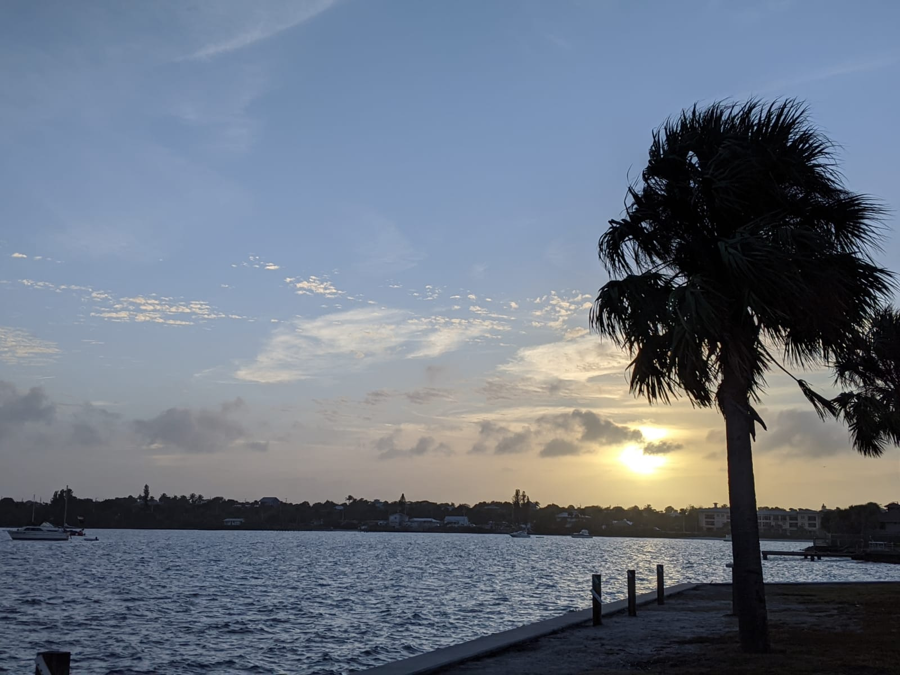

My name is Michelle Singh and I hail from Texas. I’d like to share a bit about myself. I was born and raised in sunny southern California. I joined the Air Force Reserves right out of high school and served for 6 years as a Medical Technician. Although my military career was short, I've learned about discipline, teamwork, sacrifice and hard work. As a Medical Technician, I cared for veterans, service members and their families in the surgical intensive care unit (SICU). After my time in the Air Force, my husband, Gopal, joined the Army. That adventured took us to Fort Stewart, Georgia; West Point, New York; and finally, to San Antonio, Texas.
My family and I enjoy all thing's outdoors. We look forward to spending time at the beach, camping at state parks, taking hikes and creating beautiful memories. Below are some place we'd like to visit.
  